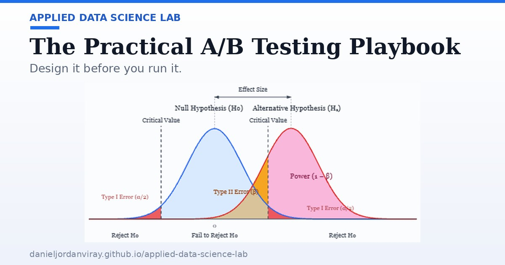

The Practical A/B Testing Playbook
A getting-started guide to running A/B tests in the real world: locking in design parameters, calculating power and sample size, the pitfalls that fake a win (multiple variants, multiple metrics, sample ratio mismatch), ratio metrics and the Delta Method — with an interactive power diagram.